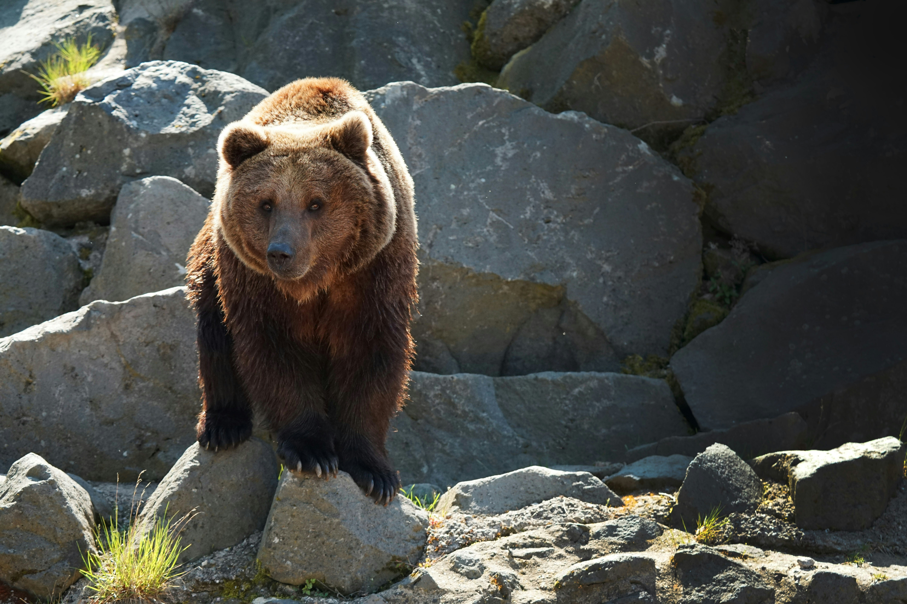
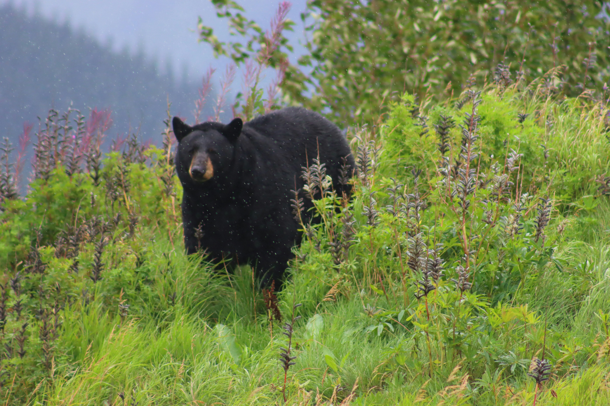
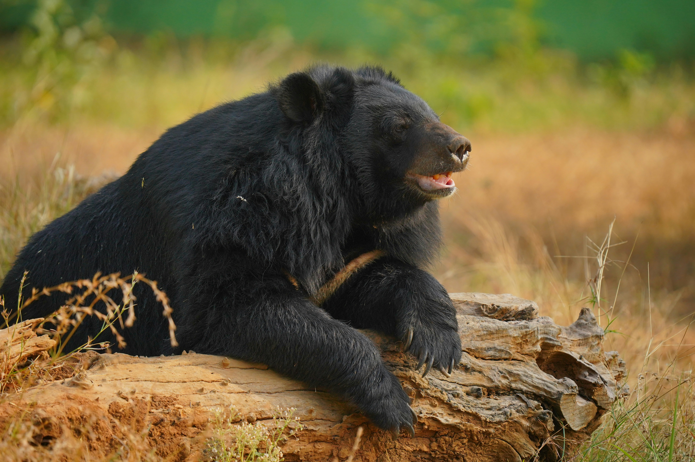
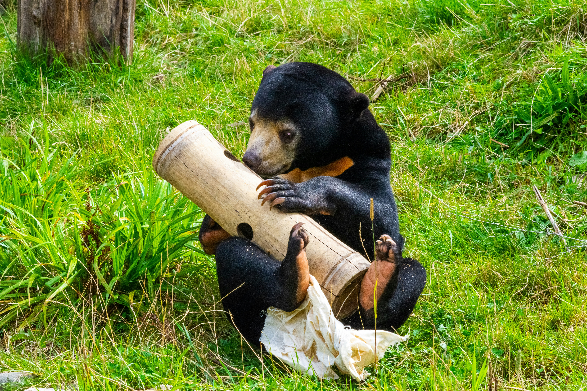
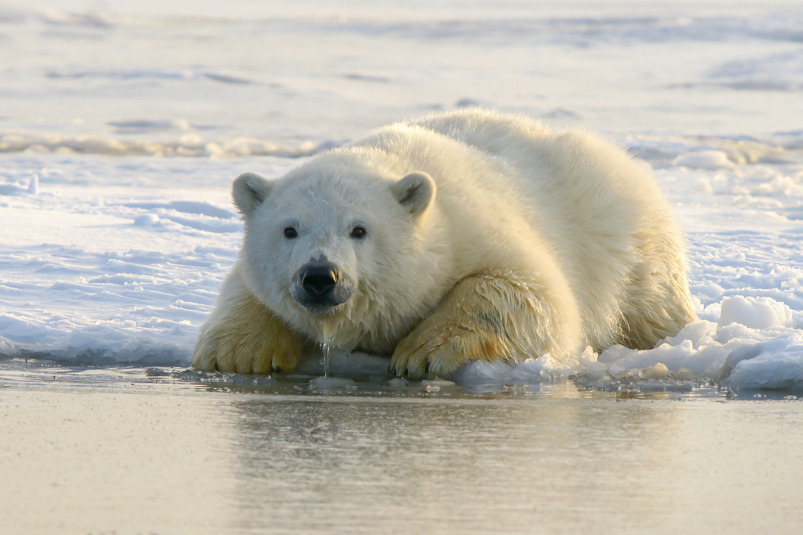

Brown Bear
The brown bear is a big, aggressive bear, a little smaller than the biggest bear, the polar bear. They're also early-birds (2), with most of their activity taking place between mornings and early afternoons.
He's native to North America and Eurasia, and can be spotted anywhere from the coast all the way to the Himalayas, 5,000m from sea level. He does have a preference though. He is most commonly seen in semi-open country. Interestingly, the closer they live to the coastal Alaska the bigger they become. Usually, brown bears average around 1000lbs but Alaskan brown bears can be as big as 1300lbs.
Who do you want to meet next?

American Black Bear
The American Black bear the most common kind of bear! He's native to North America, yet his population twice as big as all other bear species combined. Unfortunately, this means that the American Black bear is one of only two species to be consider not endangered by the The International Union for Conservation of Nature (4).
This bear's diet isn't very picky at all. In addition to being an omnivore like most bears, the American Black bear's diet shifts depending on the season. For this reason, they tend to prefer to stay in densely forested areas, where they have the widest variety of food and the least competition from larger, more aggressive bears like the brown bear who prefer wider, more open areas.
Who do you want to meet next?

Asian Black Bear
Despite this bear's appearance and relatively large size (a little bit smaller than an American black bear) this bear has evolved to climb! Interestingly though, the Asian black bear jaw hasn't yet evolved for tree-life yet. In nature, he's an herbivore with the exception of bugs, but his jaw structure resembles one more of an omnivore.
Out of all bears, the Asian black bear actually is the most bipedal, meaning that he can walk up a quarter of a mile on just two feet. He's also got the cutest, tallest ears out of all bears. You can find him in a wide range of places. Iran, Pakistan, India, Himalayas, Southeast Asia, the Korean Peninsula, Taiwan, mainland China, and the islands of Honshū and Shikoku in Japan are all suitable homes for the Asian black bear. Funnily enough, he'll only ever hibernate in specific regions during colder winters.
Who do you want to meet next?

Sun Bear
The smallest, cutest bear, standing at just 28 in tall from its shoulders and only weighing 55–143 lb. His size and relatively large paws make him well-adept for climbing trees. Like most other bears he's an omnivore, meaning he loves honey just as much as other bears (besides the polar bear) but he also has a sweet tooth for fruits, seeds, termites, ants, beetles, and bees.
Like most other bears he's unfortunately an endangered species made worse by being bound to a few specific regions. You can find him Northeast India, Bangladesh, mainland Southeast Asia, Brunei, and Indonesia.
Who do you want to meet next?

Polar Bear
The polar bear is another large bear, a sibling to the brown bear. As you might guess, he's native to the arctic area and its neighbors, such as Russia, Alaska, Greenland, and the Svalbard Archipelago of Norway. But since his favorite food is blubber from seals, walruses, and beluga whales, he doesn't actually live at the north pole, just in the surrounding icy waters.
Unlike most other bears, the polar bear really does only eat meat, making him a hypercarnivore. He prefers to ambush his prey by either hiding in the water below or hovering over the icy water from above.